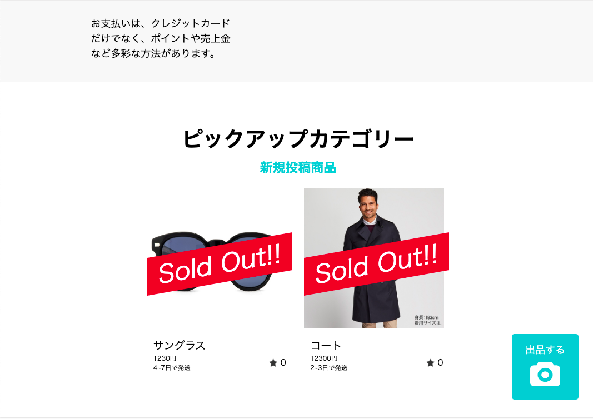
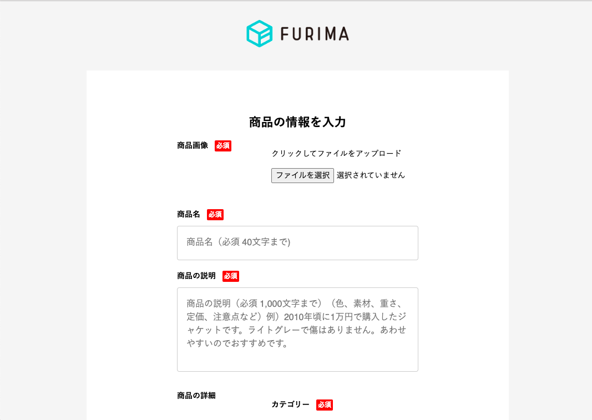

FURIMA（フリマアプリ）
開発環境
Ruby / Ruby on Rails / MySQL / GitHub / Heroku / Visual Studio Code
-
概要
制作時間 32時間(バックエンドのみ作成) URL https://furima-37861.herokuapp.com/ ID frmappname PASS 08642 -
動作テスト
購入テスト用アカウント
mail test@co.jp PASS 123456a 購入テスト用カード情報
番号 4242424242424242 期限 12/24 CVC 123
OUTLINEアプリケーションの概要
プログラミングスクールの最終課題制作としてフリーマーケットのアプリケーションを作成しました。(バックエンドのみ作成)
ユーザーを登録すると商品を出品できるようになります。自身が出品した商品は、編集と削除をすることができます。他のユーザーが出品した商品は、クレジットカードを用いて購入することができます。
クレジットカード購入機能については、PAY.JPが提供しているAPIを使用しています。
-
開発で工夫した点
初めにタイムスケジュールを作成し、実装したい機能のタスクを細分化や1機能当たりの目安時間を明確に決めてから開始しました。
現状の知識の理解度を認識するため、目安時間と実際にかかった時間の相違を記録。理解度が足りず時間がかかってしまった機能はカリキュラムで再復習して知識の定着化に繋げました。頻出する流れや打ち間違えやすいコードに関しては、ミスを防ぐためQiitaなどの記事でアウトプットしたり、メモアプリにまとめていきました。
その結果エラーが出た際にも、エラー箇所の予想がしやすくなったり、解決のための検証するべき場所の幅が広がりました。今後も現状を確認しながら、不足している知識のインプットやアウトプットを大切にしていきたいと思います。 -
開発で苦労した点
Formオブジェクトパターンで、1つのフォームから複数のテーブルに情報を保存する実装に苦労しました。
具体的には保存したいデータのバリデーションの記載方法について工夫が必要でした。フォームから送信された時点では保存したいデータが含まれておらず、フォーム全体のデータを保存することが難しい状態でした。
そこで保存したいデータがどの時点で作られている必要があるか再度見直し、適正な箇所にメソッドを作成することで解決につながりました。 行いたい処理を明確にし、基礎となる考え方を見直すことの重要性を再認識することができました。